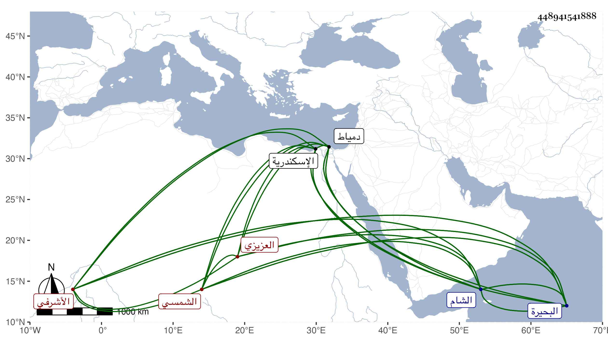

0902Sakhawi.DawLamic.ITO20230111-ara1.EIS1600.448941541888
Biography ID: 448941541888
152
تمراز الشمسي الأشرفي برسباي العزيزي نسبة للعزيز بن الأشرف فهو معتقه أمير سلاح وابن أخت الأشرف قايتباي ، كان قدومه مع جالبه في سنة ست وثلاثين وهو قريب المراهقة فدام إلى أن صار في الأيام الاينالية ساقيا ثم أضاف إليه إمرة عشرة وعظمه وقربه وساق المحمل في أيامه أحد الباشات فلما أكره الأتابك جرياش كرد المحمدي على الركوب في الأيام الظاهرية خشقدم وأخذه المماليك من تربته وذلك في أثناء سنة تسع وستين واجتازوا به من داخل البلد كان ممن ركب معه فلما فر المشار إليه إلى القلعة أمسك هذا وتحقق الظاهر ركوبه عليه بجراح حصل في يده وجهز لدمياط وأكرم في تجهيزه لها دون اسكندرية لصهره أبي زوجته قرقماس الجلب الأشرفي أمير سلاح ودام بها متحفظا بالانقطاع ببيته حتى عن الجمعة حذرا من غائلة الظاهر خصوصا وجرباش كان أيضا منفيا بها فلما انتهى الأمر إلى الظاهر تمربغا جيئ به في حادي عشري جمادى الأولى سنة اثنتين وسبعين هو ودولات باي النجمي بعناية خاله الاتابك قايتباي فنزل في بيته تجاه المدرسة السودونية من زاده بعد أن كان الأمير أزبك من ططخ الظاهري تملكه ، وسافر البدر بن القطان ومعه ابن حسن لدمياط للاشهاد على صاحب الترجمة وكان نزوله به فيما قيل باذن من خاله مع ارسال المكاتيب له ليعود الامر كما كان وامتناعه من ذلك واستمر على ملك الاتابك وأعطاه الظاهر حينئذ طبلخاناه ثم لم يلبث أن تملك خاله فصيره أحد المقدمين على اقطاع الظاهر المنفصل وجهزه كاشف التراب بالغربية فدام سنين ، وسافر في تجريدة سوار وكان هو أجل من رغب سوار للنزول بأمانه ولذا اشتد غضبه هو وخير بك حديد حين نقض ذلك واستمرت الوحشة بين الدوادار وبينهما ، ثم استقر رأس نوبة النوب بعد انتقال اينال الاشقر لامرة سلاح ، وماتت زوجته ملكباي ابنة قرقماش في سنة تسع وسبعين وجهز الشهاب البيجوري للحج عنها واتصل بعدها بابنة المنصور بن الظاهر جقمق وهي بكر وله منها ابنة ماتت في الطاعون وولي أمر البحيرة فنظمها وحمدت سيرته ودان له أهل تلك النواحي وفي أثناء تكلمه فيها كان قتل الدوادار يشبك من مهدي فاستقر به عوضه بعد سنة فأزيد في امرة سلاح فتزايدت ضخامته وارتفعت مكانته ، وفي أثناء ذلك ماتت زوجته المشار اليها فتزوج في سنة سبع وثمانين ابنة جانم الاشرف نائب الشام كان وهي بكر أيضا واستولدها وكذا تحول لبيت الظاهر تمربغا المعروف بمنجك بعد سفر قجماش لنيابة الشام بالاجرة لجريانه في أوقافه ، فلما كان في تاسع جمادى الاولى سنة تسع وثمانين برزباش التجريدة المجهزة لدفع على دولات أخي سوار وناب عنه في البحيرة مملوكه قراكز فلما قبض بقية خراج سنة أستاذه وأردف ذلك بسنة أخرى انفصل عنها بكرتباي الاشرفي قايتباي ، واستمر صاحب الترجمة غائبا في المهم إلى أن أرسل الاتابك اليهم في عسكر ثقيل وصار هو الباش ، وكان ما حكي في الحوادث ثم كان قدوم العساكر في أواخر ذي القعدة سنة احدى وتسعين وهو متوعك فدام حتى سافر أيضا لدفع عسكر ابن عثمان صحبة الاتابك في جمادى الثانية سنة ثلاث وتسعين وكاد أن يقتل فيها فانه لما اختطف السنجق وحمله بنفسه ودخل به إلى ذاك الفريق ونال منهم تكاثروا عليه فعاين قبضه بل ضرب سبع ضربات جرح منها في جبينه ويده ولولا لطف الله لتلف ، وعولج لينزل عن جواده فلم يقدروا وأظهر من يقظته وفروسيته ما الله به عليم وبادر خشداشه بيغوت لطعن القاصد لاتلافه فأتلفه ودام متعللا إلى أن عاد معهم في ربيع الاول من التي تليها واستمر حتى سافر صحبة الاتابك أيضا في ربيع الثاني سنة خمس ، ونعم الامير توددا للعلماء والفقراء واقبالا عليهم والارشاد لما يقدر عليه مما تكون فيه المصالح للعامة ، ولم أزل أشهد منه الود والثناء حتى في الغيبة مع قلة ترددي إليه وتكرر إلزامه لي بذلك بالنسبة إلى عموم الأمراء ونحوهم مما أرجو جميل قصده فيه .
